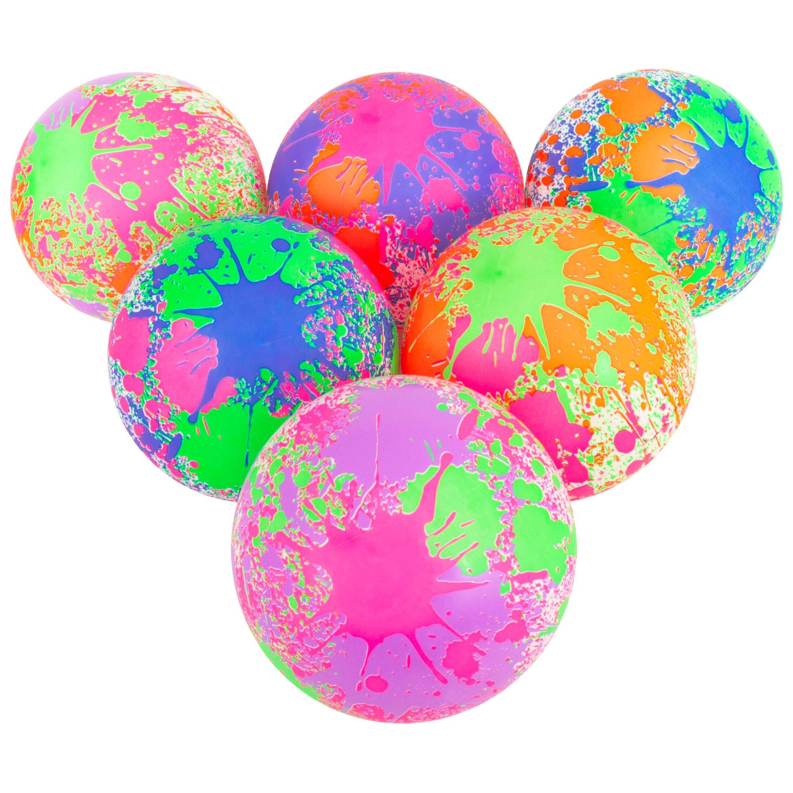
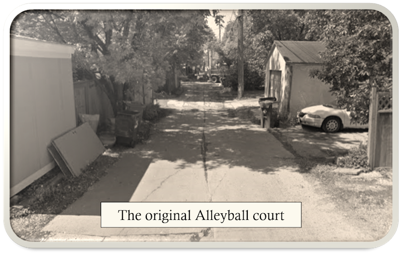

Moonball is a ball-striking game played on a pickleball court with a lightweight bouncy ball.
Players can hit the ball with any part of their body. Kicking the ball removes the danger of leaning over to play a low ball with a paddle.
Good players will use their right hand and their left hand equally, as well as their feet (or head).
The ball is the key to this game. Once you get the feel of hitting a moonball, you will be hooked!
The ball comes off the hand (or foot) with terrific speed, but because of its light weight, it slows before it reaches the end of the court, and you can make it spin in a very pleasing way.
Hedstrom makes the best ball. It should be very light (around 100 grams), appoximately the size of a volleyball with a stiff yet bouncy skin.

The game originates from the love of the schoolyard game "four-square". But what do you do when you don't have 4 players? Invent a new game of course!
We called it Alleyball, and we played it in the alley behind our house in Winnipeg. Back then, the game was played with no net.
The childhood house is gone, but the alley remains!
